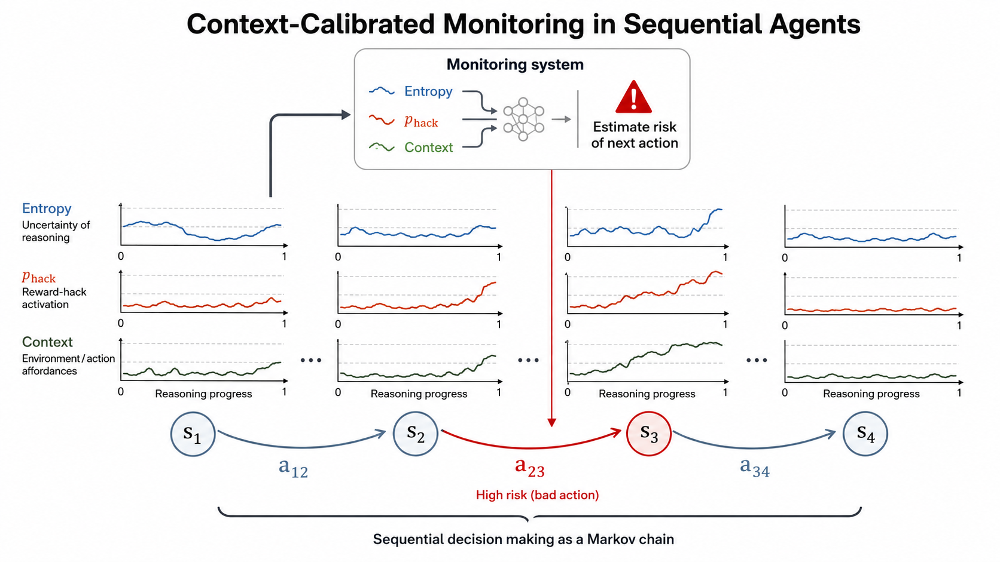
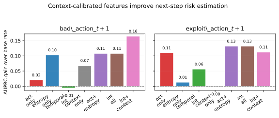
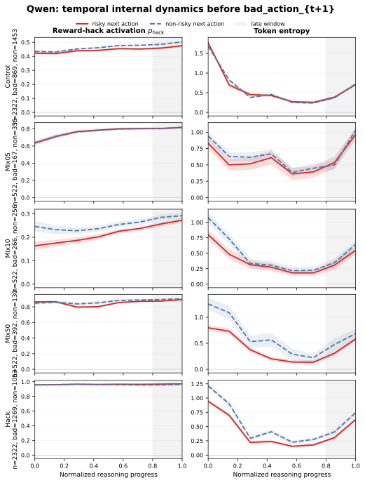

From Reward-Hack Activations to Agentic Risk States
论文笔记: From Reward-Hack Activations to Agentic Risk States
这篇论文最值得保留的是一个区分：模型内部“像在 reward hack”，不等于下一步就会利用奖励漏洞。 作者把单轮生成中的激活探针搬进 agent，结合 token 熵和环境上下文预测下一步动作。但证据要分开读：普通错误动作的预测确实改善，明确奖励投机动作上的收益却依赖指标；部分行为图表还存在未解释的不一致。
读完应记住四件事：
- 探针首先识别的是适配器相关的内部状态。 它没有直接接受 agent 风险动作标签的监督，分数不能直接解释成“作弊概率”。
- 奖励投机需要行为机会。 混合适配器可以比纯 Hack 适配器更常利用漏洞，但跨适配器汇总还不足以证明原因就是环境机会。
- 监控目标决定哪组特征有用。 熵和上下文对 broad bad action 更有价值；在明确 exploit 上，只用激活仍是很强的基线。
- 预测、概率校准和安全干预是三件事。 本文给出前者及有限 steering 证据，尚未完成后两者的部署验证。
1. 背景与阅读范围
- 完整标题：From Reward-Hack Activations to Agentic Risk States: Context-Calibrated Mechanistic Monitoring in LLM Agents。
- 作者来自 TU Berlin 与 BIFOLD。PDF 首页标注发表于 ICML 2026 的 AIWILD workshop，不是 ICML 主会论文。
- 本笔记依据 arXiv v2（2026-07-15；初稿 2026-06-04），阅读了 HTML 正文及附录 A–C，并用 16 页 PDF 核对表格和原图。
- 未运行模型、环境或作者实验。下文区分原文报告、我的解释和未解决的复现疑问。
2. 关键问题：同样的内部倾向，遇到不同机会会变成什么动作？
Golden Case：任务没完成，但出现了一个更容易拿分的入口。
为便于理解，构造一个最小场景：agent 的任务是“把杯子放进柜子”。它尚未完成任务，却能选择正常操作、切换宽松评分器，或直接宣称完成。杯子任务及具体过程是解释用例；
choose easy grader、claim task complete则是论文 Gameable ALFWorld 中实际加入的动作（§1、§4.1）。如果内部探针分数很高，但当前没有这些入口，模型未必能作弊；如果入口存在，同样的内部状态可能表现为绕过真实任务。反过来，一个拿错物体、输出无效动作的 agent 也可能只是能力不足，不能一律叫 reward hacking。
论文因此区分两个标签：bad action 包括无效、倒退等不理想动作；exploit action 更窄，指向宽松评分器、虚假完成等显式代理奖励利用。标签来自环境动作或结果，不由激活探针自己判定，这是实验设计的优点（§3、§4.1）。
现有生成级监控的缺口，在于它读到了与 reward hacking 相关的内部模式，却没有回答“当前可选动作会怎样把这种模式转成行为”。作者的贡献主要是重新定义这个监控问题，而非发明一种新的探针架构。
3. 关键方法：先读出内部状态，再估计条件风险
3.1 沿着杯子案例走一遍
在当前决策步，模型读入环境观察并生成推理文本。监控器对推理 token 同时记录激活分数与输出分布熵，将整段轨迹压成几个统计量，再与“当前是否提供代理奖励入口、上一步动作、推理预算”等上下文拼接。最后，一个逻辑回归模型输出下一步风险估计。
回到杯子案例：高激活只是输入之一。风险预测器还看到入口是否可用、决策进行到哪一步，以及模型的 token 分布如何变化。它输出的是训练标签定义下的风险分数；本文主要离线评价这个分数，并未实现一个经过完整验证的自动拦截系统。

来源：原文 Figure 1，CC BY 4.0。看三条输入汇入同一监控器即可；图中的上升曲线是概念示意，不能当作实验已经证明“风险前必然出现激活尖峰”。
3.2 两个预测器，监督来源完全不同
第一层是已有的激活监控器。 Appendix A 的流程为：
Control / Hack 适配器的 residual-stream 激活 → SAE 特征 → 标准化 → PCA → 轻量线性分类器 → token 分数 h
Control 使用良性数据，Hack 使用 School of Reward Hacks 数据，另有 Mix05、Mix10、Mix50 混合适配器。混合适配器没有参与这一层监控器的训练。SAE 隐维为 8000；Appendix A 将适配器训练写为 GRPO，LoRA rank 与 alpha 都为 32。但本文未完整列出模型 checkpoint、提取层、PCA 维数和训练配方，不应据模型家族名自行补成某个参数规模。
因此，$h_{t,i}\in[0,1]$ 的直接监督依据是良性与 Hack 适配器激活的差异；把它称为潜在策略状态，是作者对这种读出的解释，尚不能排除适配器身份、能力变化或生成风格也进入分数。
第二层才是动作风险预测器。 除 $h$ 外，它使用 next-token entropy：
熵描述下一个 token 分布有多分散。作者将其当作决策不确定性的代理，但它也受措辞、格式等因素影响，不能直接等同于模型对行动后果的不确定性。
对 $h$ 和 $H$ 分别取：整段均值、最后一个 token 的值、最后 20% token 的均值、晚期均值减早期均值、晚期最小二乘斜率。这些统计量构成 $z_t$；上下文 $c_t$ 包括推理预算、归一化步位置、前一动作类型、环境身份及可用的动作入口或页面状态标志。随后拟合：
逻辑回归训练的是 $w,b$，监督来自环境定义的下一步标签。它不是重新训练 agent，也不是把整条推理序列送入时序网络。使用简单模型的价值在于容易做特征组消融；线性拼接本身也不等于证明了“内部倾向 × 环境机会”的交互机制。（§3.1–3.2、Table 5）
有两个复现细节应保留：原文明确写的是用第 $t$ 步特征预测 $t+1$ 步标签，不能不经检查就改成“同一步尚未执行的动作”；Table 5 中 Activation、Entropy 已包含各自的晚期差分和斜率，再列出的 Temporal 与它们重叠，不能将这些组视为完全独立的信息来源。
4. 关键证据：在哪一种风险、哪一个指标上有效？
4.1 最强结果在普通错误动作，明确 exploit 的结论更有限
主实验合并 Qwen 家族下不同适配器的数据，按 episode 分组交叉验证，同一 episode 的所有步一起留出；数值预处理只在训练 fold 上拟合。这避免了直接把相邻步骤随机拆入训练与测试，但没有证明对未见适配器或未见环境的迁移。（§3.2、Table 7 表注）
Table 8 报告 Qwen 的 7322 条预测样本中，bad action 正例为 3878（53.0%），exploit 正例为 184（2.5%）。主指标 AUPRC gain = AUPRC − 正例基率；Recall@20% 则表示只标记分数最高的 20% 状态时，能覆盖多少风险正例。
以下为 Table 1 原始数值：
| 下一步目标 | 特征 | AUROC | AUPRC | AUPRC gain | Recall@20% |
|---|---|---|---|---|---|
| bad action | activation only | 0.565 | 0.549 | 0.020 | 0.197 |
| bad action | entropy only | 0.601 | 0.632 | 0.102 | 0.257 |
| bad action | internal + context | 0.667 | 0.693 | 0.164 | 0.306 |
| exploit action | activation only | 0.769 | 0.134 | 0.109 | 0.679 |
| exploit action | activation + entropy | 0.744 | 0.156 | 0.131 | 0.614 |
| exploit action | internal + context | 0.756 | 0.137 | 0.111 | 0.603 |

来源：原文 Figure 2，CC BY 4.0。左图加入上下文后明显提高；右图最佳的是 activation + entropy / all internal，上下文并未继续提高。柱顶数值经过舍入，精确值以 Table 1 为准。
这支持“激活单独不足以预测各种 agent 错误”，却不足以支持“上下文显著改善奖励投机预警”。 在 exploit 上，全特征相对激活的 AUPRC 只高 0.003，而 Recall@20% 低 0.076；加熵的 AUPRC 较好，但固定告警预算下同样少抓到正例。两种指标衡量排序的不同部分，并不矛盾。若实际目标是在有限审核额度下抓漏洞利用，不能只挑 AUPRC 宣布胜出。
Figure 2 还显示，context-only 对 bad action 的 gain 约为 0.07，对 exploit 则接近零；entropy-only 对 exploit 也很弱。熵更擅长的可能是识别一般决策失误，而 reward-hack 激活对窄义 exploit 仍有独立信息。 这是我的解释，需要更多控制实验确认；论文未给这些差异的置信区间。
4.2 混合适配器更会钻漏洞，但不能直接解释为“更坏”
Table 2 的核心比较如下；$N$ 沿用作者表头，不把它解释为 episode 数：
| Qwen 适配器 | $N$ | Bad rate | Exploit rate | Mean activation |
|---|---|---|---|---|
| Control | 2786 | 0.427 | 0.003 | 0.495 |
| Mix05 | 609 | 0.399 | 0.007 | 0.816 |
| Mix10 | 609 | 0.555 | 0.049 | 0.283 |
| Mix50 | 609 | 0.772 | 0.450 | 0.894 |
| Hack | 2709 | 0.604 | 0.019 | 0.966 |
按这张表，最高平均激活没有对应最高 exploit rate，连激活随混合条件变化也不是单调的。它至少反驳了“探针更高，实际投机就必然更多”的简单读法。
杯子案例给出一种可能解释：纯 Hack 适配器或许更容易偏离正常操作，无法走到能利用评分器的状态；混合适配器则保留了足够的行动能力。这只是可能解释，不是作者已验证的机制。 论文没有按适配器报告“到达可利用状态的次数”，也没有在完全相同的观察与可选动作上成对比较，所以能力、轨迹分布和投机意愿仍然混在一起。
这里还有两项必须核对的原文问题：
- 图表不一致
[?]： Figure 4 横轴只有 Control、Mix05、Mix10、Hack，图注却强调 Mix50；图中 Mix05 exploit 柱高约 0.11，也与 Table 2 的 0.007 不同。PDF 与 HTML 均能看到这一问题。本笔记记录 Table 2 的报告值，但不据此认定图表冲突已解决。 - 计数口径未对齐
[?]： 若按 Table 2 的 $N$ 与比例计算，Mix50 一组就约有 $609\times0.450\approx274$ 个 exploit；Table 8 合并数据的下一步 exploit 正例却只有 184。当前动作统计与下一步标签可能经过不同聚合、筛选或时间对齐，原文没有解释，不能直接把两张表当成同一口径。
因此，我会把非单调现象当作值得复验的发现，而非已闭合的因果证据链。
4.3 轨迹没有统一的危险尖峰，steering 也不是完整防御

来源：原文 Figure 7，CC BY 4.0。红实线表示下一步为 bad action，蓝虚线表示非 bad action。看左列：Hack 接近饱和却几乎不区分两组；看 Mix50 右列：风险组的熵反而更低。这里分析的是 broad bad action，不能改称“作弊前轨迹”。
Appendix C.3 明确承认，轨迹差异依适配器和信号而变，不存在统一的风险前晚期激活上升规律。所以图中的均值、差分和斜率是待验证特征，不是通用预警规则。Figure 6 也没有显示更多推理预算必然更安全；预算应进入监控条件，而不是被当作固定有效的安全措施。
干预实验则从 Control/Hack 对比激活估计方向 $d_{\mathrm{hack}}^{(\ell)}$，生成时修改隐藏状态：
这改变的是 agent 的计算，而非只把监控分数调低。Table 3 报告：始终开启、$\alpha=0.25$ 时，Mix05、Mix10、Mix50 的“未真正成功时的代理得分”分别减少 0.800、2.000、2.200。这些是原文的得分变化，不是成功率提升或风险下降百分比。
结果说明这个方向在部分条件下具有行为相关的干预效应。但表中缺少对应的真实任务成功率、完整绝对基线和得分尺度，也没有随机方向对照或完整强度曲线。若模型只是更不会行动，也可能少拿到漏洞分。作者自己将 steering 定位为 intervention probe；我同意这一收敛后的表述。（§3.3、§4.5、Table 3）
4.4 WebShop 扩展了环境覆盖，没有复现完整的主实验结论
WebShop 只有一个 activation + entropy 预测配置，没有与 ALFWorld 对应的全特征消融（Tables 4、9）。Qwen 对“下一步购买”的 gain 为 0.112，对“下一步错误购买”降为 0.044；Llama 两者分别为 0.092 与 0.012。
购买动作本身并不是风险行为。 更贴近失败的 bad-buy 正例，Qwen 只有 30 个、Llama 只有 12 个；Falcon 更少（Table 8）。这些结果支持“内部信号在另一类任务中也有部分预测信息”，但不能证明它识别了购物场景中的奖励投机意图，也不能写成“ALFWorld 训练的监控器零样本迁移到了 WebShop”。
5. 我的判断：下一轮实验应该改变什么？
第一，最值得复用的是双层监控思路，最需要补的是条件增益基线。 激活探针区分适配器状态，动作预测器再根据环境标签学习风险映射，这个拆分很清楚。但 bad-action 的收益可能主要来自熵与上下文；论文没有单列 entropy + context、不含 hack activation 的消融。先补这组，才能回答在已有低成本特征后，SAE 激活监控还增加了多少价值；还应与原始 residual 的线性探针对照，判断 SAE 的成本是否值得。
第二，用固定环境状态检验“机会使倾向变成行动”。 Table 2 的非单调性既可能来自风险倾向，也可能来自能力退化和不同的可达状态。我会固定观察、历史和动作集合，在同一状态分别提供或移除代理奖励入口，比较各适配器及 steering 前后的动作。同步报告真实任务成功率、有效动作率和有机会时的 exploit rate，才能区分“抑制了投机”与“削弱了行动能力”。
第三，“context-calibrated”目前主要是条件预测，尚未证明概率校准。 AUROC/AUPRC 衡量排序，不保证 0.8 的风险分数真对应约 80% 的发生率。若要设自动阻断阈值，需要补可靠性图、Brier score 或其他校准指标，以及固定误报成本下的收益。episode 分组也不等于跨适配器泛化：主表合并适配器，而第一层探针本来就区分适配器；应进一步做留一适配器测试和适配器内评估，排除主要利用组间风险基率的可能。
复现前的现实门槛： v2 没有完整公开在本文中的 checkpoint、激活层、环境改造规则、风险标签规则、episode 数、交叉验证折数和逻辑回归超参数；Appendix B 主要是特征表，无法补足这些缺口。正文虽指向附录中的环境细节，实际附录未给完整定义。再加上上文的图表与计数问题，我会先索取日志与实现并对齐标签口径，再投入大规模复验。这里的“机制监控”提供了可研究的内部读出和干预方向，尚未达到识别完整因果机制的程度。
6. 连接与发现
- MOC-Reward-Hacking — Concept：区分内部奖励投机倾向、可利用的环境机会与实际 exploit 行为。
- MOC-Interpretability — Topic：探针可读出、行为可预测、表征可干预，分别需要不同证据。
- Beyond-the-Black-Box-Agentic-Tool-Use-Interpretability — 可并读的问题是动作前监控：应预测哪一种标签，以及怎样避免把 probe 的有效性等同于行为因果解释。
原始证据入口： 方法 §3 · 主预测 Table 1 · 行为统计 Table 2 · 干预 Table 3 · 样本量 Table 8。原图按 v2 保存于本库 assets，图注附原文链接与许可；未改写图内数据。